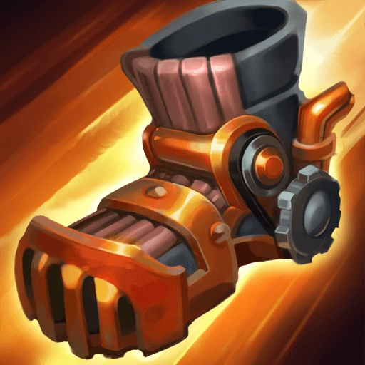

0
Buy upgrade: 100
Korean L9 turbobroken autosmite script 100%WR:
L9 cookie clicker script نشط: يدخل Jax في Evasion ، وهو موقف دفاعي ، لمدة ثانيتين ، مما يتسبب في تفادي جميع الهجمات الأساسية غير البرجية ضده طوال المدة. يحصل Jax أيضًا على تقليل الضرر بنسبة 25٪ ، مما يقلل الضرر من جميع قدرات منطقة التأثير التي يتم الحصول عليها من أبطال البطل. يمكن إعادة صياغة Counter Strike بعد ثانية واحدة ، ويتم ذلك تلقائيًا بعد انتهاء المدة. RECAST: يلحق Jax ضررًا جسديًا لجميع الأعداء القريبين ، ويزيد بنسبة 20٪ لكل هجوم يتم تفاديه ، وزيادة تصل إلى 100٪ ، ويصعقهم الصاعقة لمدة ثانية واحدة.